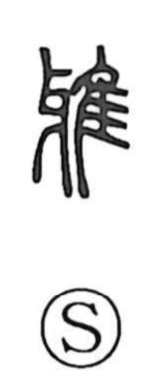

Explanation
雅 is a phono-semantic character: 隹 shows a small bird, while 牙 supplies the sound, understood as echoing a crow’s cry. Early glosses already treat 雅 as a kind of crow; in this bird-name series many graphs set 隹 for “bird” and add a phonetic suggesting the call (as with 鶴, 鳩, 雉). From this base the graph entered the sphere of court performance: the Major and Minor Odes of the Book of Odes—songs for aristocratic ceremonial dances—are titled 大雅 and 小雅. In older usage these titles could also be written with 夏, a figure of a court dancer, or with 疋, a shorthand form depicting a raised-legged dance, with 雅 functioning as a phonetic substitute in the transmitted text. Because these sections expressed the cultivated tastes and manners of the elite, 雅 came to mean elegance and refinement; in compounds like 雅言 it further signifies proper, correct speech.